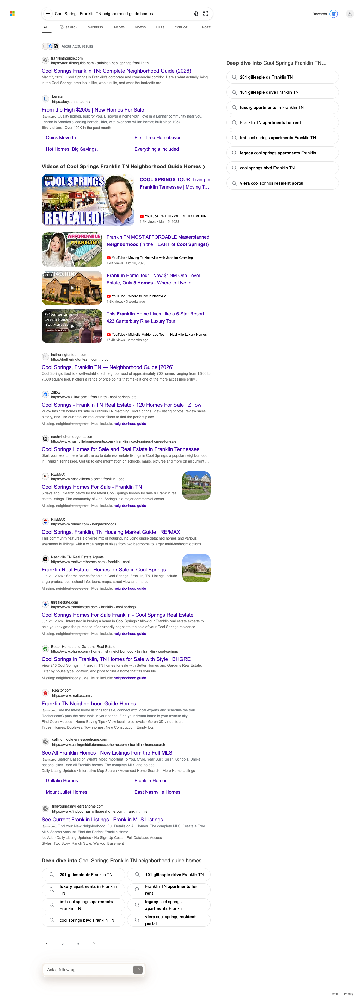
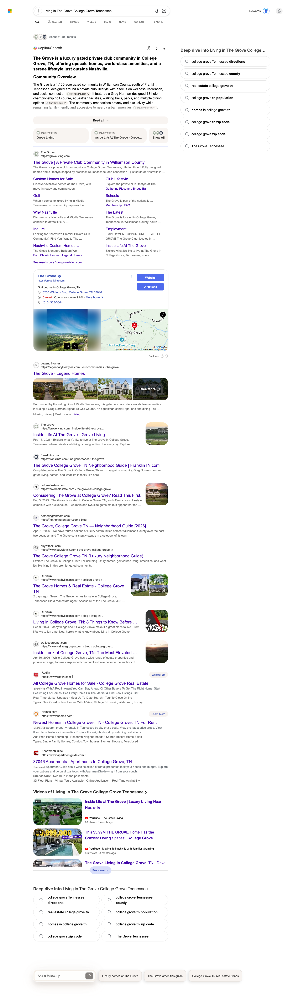

June is the month The Hetherington Team's content broke through on ChatGPT. In May, our structured checks could not machine-confirm a single ChatGPT citation. In June, ChatGPT cited Hetherington content on 9 of 12 tracked buyer queries. This is a new AI answer surface, won this month and machine-confirmed, not a one-time screenshot.
Perplexity held its ground and added a new win. At the June 14 check Perplexity cited 4 queries; in June it cites 5. The new one is the Westhaven neighborhood guide: absent at the June 14 check, cited by June close. The groveliving.com microsite carries 3 of the 5 Perplexity citations, so the sub-brand strategy is doing measurable work.
We track twelve buyer-intent queries for hetheringtonteam.com and groveliving.com across ChatGPT, Perplexity, and Bing. A query counts as cited when our tracking machine-detects one of those domains in the engine's answer sources at any point in the month, verified by checks throughout the month. Every result below is presence, not rank, and month-over-month comparisons stay within a single engine.
The surfaces we could measure in May and June are not identical, so we compare each engine only against itself. Across engines the direction is the same: up.
Cited queries went from none machine-confirmed in May to 9 of 12 in June. A brand-new answer surface, won this month.
Cited queries rose from 4 at the June 14 check to 5 in June, adding the Westhaven guide as a new win.
Cited queries rose from 1 at the June 14 check to 5 in June: the Westhaven and both Cool Springs guides, plus Living in The Grove and the Grove golf query carried by the microsite.
Each cell shows whether the content was cited on that engine at any point in June. Cited means one of the two domains was named as a source in the engine's answer.
| Buyer Query | ChatGPT cited in June |
Perplexity cited in June |
Bing cited in June |
|---|---|---|---|
| What is it like to live in Westhaven Franklin TN hetheringtonteam.com |
✓ |
– |
– |
| Westhaven Franklin TN neighborhood guide homes amenities New in June hetheringtonteam.com |
✓ |
✓ |
✓ |
| Cool Springs Franklin TN neighborhood guide homes hetheringtonteam.com |
✓ |
✓ |
✓ |
| Cool Springs Franklin TN best place to live hetheringtonteam.com |
✓ |
– |
✓ |
| Living in Franklin TN neighborhoods schools luxury homes | – |
– |
– |
| Franklin Tennessee luxury neighborhoods guide 2026 hetheringtonteam.com |
✓ |
– |
– |
| Historic Downtown Franklin TN living neighborhood | – |
– |
– |
| Downtown Franklin TN homes walkable neighborhood hetheringtonteam.com |
✓ |
– |
– |
| Living in The Grove College Grove Tennessee groveliving.com |
✓ |
✓ |
✓ |
| The Grove College Grove Greg Norman golf homes groveliving.com + hetheringtonteam.com |
✓ |
✓ |
✓ |
| Moving to Nashville TN complete relocation guide groveliving.com |
– |
✓ |
– |
| Moving to Nashville from California best neighborhoods hetheringtonteam.com |
✓ |
– |
– |
Reading the matrix. In June, Hetherington content is cited on 9 of 12 queries on ChatGPT, 5 of 12 on Perplexity, and 5 of 12 on Bing. Four queries are cited on all three engines at once: the Westhaven guide, the Cool Springs neighborhood guide, Living in The Grove, and The Grove Greg Norman golf homes.
In May, our structured checks could not machine-confirm any ChatGPT citations. In June, ChatGPT cited Hetherington content on 9 of 12 tracked queries. This is a brand-new answer surface, won this month.
| Query | Status | Cited domain |
|---|---|---|
| Westhaven Franklin TN neighborhood guide homes amenities | Cited | hetheringtonteam.com |
| Cool Springs Franklin TN neighborhood guide homes | Cited | hetheringtonteam.com |
| Cool Springs Franklin TN best place to live | Cited | hetheringtonteam.com |
| Franklin Tennessee luxury neighborhoods guide 2026 | Cited | hetheringtonteam.com |
| Downtown Franklin TN homes walkable neighborhood | Cited | hetheringtonteam.com |
| What is it like to live in Westhaven Franklin TN | Cited | hetheringtonteam.com |
| Moving to Nashville from California best neighborhoods | Cited | hetheringtonteam.com |
| Living in The Grove College Grove Tennessee | Cited | groveliving.com + hetheringtonteam.com |
| The Grove College Grove Greg Norman golf homes | Cited | groveliving.com + hetheringtonteam.com |
At the June 14 check Perplexity cited 4 queries. In June it cites 5, holding the original four and adding one new win.
This query was absent at the June 14 check. By June close it is cited on Perplexity, and it is cited on ChatGPT as well. The Westhaven guide is the clearest example this month of new content earning a citation on two engines at once.
| Query | Status | Cited domain |
|---|---|---|
| Westhaven Franklin TN neighborhood guide homes amenities | New in June | hetheringtonteam.com |
| Cool Springs Franklin TN neighborhood guide homes | Cited | hetheringtonteam.com |
| Living in The Grove College Grove Tennessee | Cited | groveliving.com |
| Moving to Nashville TN complete relocation guide | Cited | groveliving.com |
| The Grove College Grove Greg Norman golf homes | Cited | groveliving.com + hetheringtonteam.com |
Bing is the index several AI answer surfaces retrieve from, so presence here is a leading indicator for AI citation. At the June 14 check the probe found the domains on just 1 of 12 queries. By June close the structured probe confirms them on 5 of 12: the Westhaven guide, both Cool Springs queries, Living in The Grove, and the Grove Greg Norman golf query. Each result below was read directly from the live Bing results page and is screenshot-backed.

The dedicated Grove microsite carries 3 of the 5 Perplexity citations and appears alongside the main domain on the two ChatGPT Grove citations. A focused sub-brand for a single high-value community is earning citations the main domain has not yet won on those queries.

The Grove is a Greg Norman golf enclave at the top of the Williamson County market. Owning the AI answer for it puts the team in front of the highest-value buyers researching that community. The read: the microsite pattern works, and it is a candidate to replicate for a second flagship community.
AI answer engines can only cite pages that are in the search index. We inspected all 12 published hetheringtonteam.com guides in Google Search Console. 9 of 12 are indexed, and the connection to citations is direct: the guides earning AI citations this month (Westhaven, Cool Springs, The Grove) are all indexed, while the three not-yet-indexed guides are exactly the ones sitting quiet.
| Guide | Index status | Last crawled |
|---|---|---|
| Westhaven Franklin TN | Indexed | Jul 4 |
| Cool Springs Franklin TN | Indexed | Jun 22 |
| The Grove College Grove TN | Indexed | Jun 19 |
| Moving to Nashville TN relocation guide | Indexed | Jun 26 |
| Historic Downtown Franklin TN | Indexed | Jun 18 |
| Fieldstone Farms Franklin TN | Indexed | Jun 26 |
| McKays Mill Franklin TN | Indexed | Jun 20 |
| Berry Farms Franklin TN | Indexed | May 22 |
| Ladd Park Franklin TN | Indexed | Jun 26 |
| Living in Franklin TN (pillar) | Crawled, not yet indexed | Jun 22 |
| Laurelbrooke Franklin TN | Crawled, not yet indexed | Jun 18 |
| Legends Ridge Franklin TN | Crawled, not yet indexed | Jun 25 |
The wins above are real. The gaps are specific and addressable, and each one is a concrete July task rather than a vague ambition.
Living in Franklin (pillar), Laurelbrooke, and Legends Ridge are crawled but not indexed. Request indexing and add internal links so they enter the retrieval set. The pillar unlocks the "Living in Franklin" umbrella query, which currently earns zero citations.
The downtown guide is cited on the walkable-neighborhood phrasing on ChatGPT but not on "Historic Downtown Franklin living." The content is indexed, so the fix is on-page emphasis and heading structure that matches the historic-downtown intent.
Perplexity cites the Moving to Nashville relocation guide via groveliving.com, but ChatGPT does not yet cite it. Targeted freshness and a California feeder post are the levers to close a gap where the content already proves it can be cited.
Franklin luxury neighborhoods, Cool Springs best place to live, and Downtown walkable are cited on ChatGPT but not yet on Perplexity. The content already proves it can be cited; the work is earning the Perplexity source slot on those same queries.
groveliving.com is out-citing the main domain on its community. A second flagship-community microsite for another high-value Williamson County enclave is the clearest way to repeat the pattern.